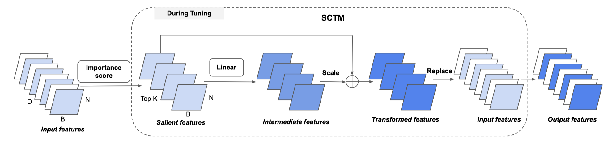

Henry Hengyuan Zhao (赵恒远)
Hiüëã, this is Henry. I'm a PhD student at Show Lab, National University of Singapore, under the supervision of Prof. Mike Zheng Shou.
My research interests lie broadly in Large Multimodal Models (LMM) and Human-AI Interaction (HAI).
Recently, I have been developing AI agent capable of interacting with computers to address real-world challenges
(WorldGUI).
I am also interested in training LMMs to uncover its potential roles for making it intelligently
(Genixer, LOVA3)
or exploring their intelligence for future alignment (InterFeedback).
üì¢ News
- [03/2025] InterFeedBack is accepted by ICLR 2025 Bidirectional Human-AI Alignment Workshop.
- [02/2025] We released InterFeedBack to explore the question "Can Large Multimodal Models evolve through Interactive Human Feedback?" Check it out!
- [02/2025] Check our new preprint about WorldGUI: Dynamic Testing for Comprehensive Desktop GUI Automation
- [12/2024] I will present our NeurIPS paper LOVA3 at Vancouver.
- [10/2024] I will present our ECCV paper Genixer at Milano.
- [09/2024] One paper is accpeted by NeurIPS 2024.
- [07/2024] One paper is accpeted by ECCV 2024.
- [09/2023] One paper is accpeted by IJCV 2023.
- [08/2023] One paper is accpeted by TPAMI 2023.
üå∫ Research Papers
See full publications here.
| Human-AI Interaction: | |
|
InterFeedback: Unveiling Interactive Intelligence of Large Multimodal
Models via Human Feedback
ICLR 2025@Bi-Align Workshop
Can Large Multimodal Models evolve through Interactive Human Feedback?
We build a straightforward interactive framework that can bootstrap any LMM into an interactive process to solve problems. On top of this, we present InterFeedback-Bench, a benchmark for evaluating interactive intelligence of current LMMs. |
|
| Human-Agent-Computer Interaction: | |
|
WorldGUI: Dynamic Testing for Comprehensive Desktop GUI Automation
arxiv, 2025
Benchmark: An early work for testing GUI agents in a dynamic setting.
Agent: An effective and foundament agent framwork for GUI automation building uppn critic-thinking philosophy. |
|
| The roles of MLLMs: | |
 |
LOVA3: Learning to Visual Question Answering, Asking and Assessment
NeurIPS 2024
üå∫ Only VQA? Let's think about GenQA and EvalQA when training MLLMs? We human not only can answering question, but also ask questions and assess the answers provided by ourself.
|
 |
Genixer: Empowering Multimodal Large Language Models as a Powerful Data Generator
ECCV 2024
üí° How MLLMs perform in data generation? (We are the first work.) We developed two data generators for nine vision-language (VL) tasks.
|
| Parameter-Efficient Tuning: | |
|  |
SCT: A Simple Baseline for Parameter-Efficient Fine-Tuning via Salient Channels
IJCV 2023
We found that tuning only a small number of task-specific channels, referred to as salient channels, is sufficient. This work represents a remarkable reduction of 780x in parameter costs compared to its full fine-tuning counterpart.
|
| Low-level Vision: | |
|
Evaluating the Generalization Ability of Super-Resolution Networks
TPAMI 2023
|
|
 |
ClassSR: A General Framework to Accelerate Super-Resolution Networks by Data Characteristic
CVPR 2021
|
 |
Efficient Image Super-Resolution Using Pixel Attention
ECCVW 2020
Over 400 citations
|